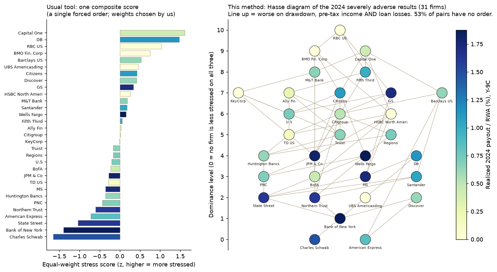

Methods scout
Two borrowed tools, each with a full research card. From network science and environmental chemistry: partial-order ranking, which orders banks only where one is worse on every stress number and counts every ranking consistent with that. From comparative biology: phylogenetic signal, which treats the program hierarchy as a family tree and asks how much growth relatives share.
The short version
- Partial-order ranking (netrankr) · network science / environmental chemistry · Q3 · recommend · home field: well established (exact; netrankr vignette reproduced; our port matches to 10−13). Weight-free dominance concordance 0.72 (p = 0.0002); trade-off pairs split pre-tax income (0.64) from loan losses (0.41), which a composite averages to 0.55; where path and SCB disagree, payouts follow the path (0.79, p = 0.001). Miss: as a predictor it loses to OLS, ARDL and SARIMAX.
- Phylogenetic signal and LIPA (phylosignal) · comparative biology · Q2 · interesting · home field: well established for K and λ (Brownian check reproduced: mean K 1.03), LIPA thin. Noise attenuates the hierarchy's signal to about 0.4–0.7 of its true size; tree borrowing passes its walk-forward bar; scrubbed text carries less signal than labels. Misses: LIPA on mismatch and drift; a category-cell flag finds planted groups as well.
Partial-order ranking (Hasse diagrams, exact rank probabilities): research card →
The 2024 Hasse diagram against the usual composite, rank probabilities, the dominance and trade-off tests, SCB vs path, year-to-year stability, the walk-forward miss, home-field reproduction and three secret-sauce avenues are on the card.

Found via · web search 2026-11-19 14:20 ET → netrankr exact_rank_prob (CRAN 2.0.0; Schoch 2018, Social Networks 54:50–60). Novelty: exotic-transfer.
Data. The lab's verified public panel: Fed severely adverse results 2013–2025 (June DFAST for 2020), FR Y-9C HI-A payouts, SCB 2021–2025 from the LBCR PDFs; 360 firm-years with payouts, 18–35 firms a year. Descriptive only.
| Test (within-year payout shuffle) | Pairs | Share where more-stressed paid less | p |
|---|---|---|---|
| Dominance pairs, same-year payout/RWA | 2,203 | 0.715 | 0.0002 |
| Dominance pairs, next-year payout/RWA | 2,034 | 0.655 | 0.0002 |
| Trade-off pairs ordered by SA pre-tax income | 2,814 | 0.639 | 0.0005 (two-sided) |
| Trade-off pairs ordered by loan-loss rate | 2,814 | 0.409 | 0.001 (two-sided) |
| Trade-off pairs ordered by CET1 drawdown | 2,814 | 0.531 | 0.19 |
| Trade-off pairs ordered by equal-weight composite | 2,814 | 0.552 | 0.002 |
| 2021–25: path-worse but SCB not higher | 175 | 0.789 | 0.001 |
| 2021–25: SCB order alone | 1,481 | 0.568 | 0.024 |
| Walk-forward 2015–2025, Spearman predicted vs realized payout/RWA (mean of 11 years) | |
|---|---|
| Poset expected rank (no fitted weights) | 0.36 |
| Pooled OLS on the three stress variables | 0.46 |
| Pooled ARDL(1,0) with last payout | 0.67 |
| Per-firm SARIMAX(1,0,0) + exog | 0.65 |
Code: runs/2026-11-19/poset (netrankr 2.0.0 and an independent Python lattice-of-ideals port at parity).
Phylogenetic signal and LIPA on the program tree: research card →
The tree views of both mock books against the usual box-by-function chart, signal indices on labels vs text, the noise attenuation, the walk-forward benchmark, the LIPA misses, home-field reproduction and three secret-sauce avenues are on the card.

Found via · web search 2026-11-19 14:20 ET → Keck et al. 2016, Ecology and Evolution, fkeck/phylosignal. Novelty: exotic-transfer.
Data. SYNTHETIC mock ZBB books (Corning-like 778 of 1,079 programs FY2020–25; MS-like 1,404 of 1,840 FY2021–25). Not either firm's budgets; answer key used only for scoring.
| Signal of per-program growth (999 reps) | Corning-like: λ / K | MS-like: λ / K |
|---|---|---|
| Label tree, observed | 0.52 / 0.40 | 0.78 / 0.54 |
| Label tree, noise-free (answer key) | 1.22 / 4.54 | 1.12 / 1.50 |
| Text tree (numbers scrubbed), observed | 0.35 / 0.003 (K p = 0.46) | 0.57 / 0.001 (K p = 0.15) |
| Usual: ANOVA R² on function, observed / noise-free | 0.45 / 0.96 | 0.59 / 0.85 |
| Walk-forward RMSE, last-year log growth | Corning-like | MS-like |
|---|---|---|
| OLS trend per program | 0.261 | 0.263 |
| Relatives' mean (tree) | 0.242 (−7.2%) | 0.225 (−14.3%) |
| Pooled ARDL(1) | 0.244 | 0.217 |
| Per-program SARIMAX(1,0,0) | 0.297 | diverged on some programs |
| No change | 0.231 | 0.236 |
Code: runs/2026-11-19/phylo (phylosignal 1.3.1, ape, phytools).
- Question rotation. Q3 was least recently targeted (last 11-17). Q1 and Q2 both ran on 11-18; Q2's previous run (11-16) is older than Q1's (11-17), so today is Q3 + Q2. No Q1 analysis today.
- Pre-registration. Written before any run on our data: runs/2026-11-19/PREREG.md. Not in it, and labelled on the cards: per-indicator scoring of trade-off pairs with a two-sided null; the planted-group precision comparison for LIPA.
- Watchlist (not run): l1ou, PhylogeneticEM, parsec, plus the Hasse-diagram ranking literature. See watchlist.md.
- Data Jared would need to supply. Q2: real program-level budgets, actuals, headcount and decision packages (everything today is SYNTHETIC). Q3: nothing private; firm-level baseline projections are not published, and the October 2020 SCB PDF is still missing.